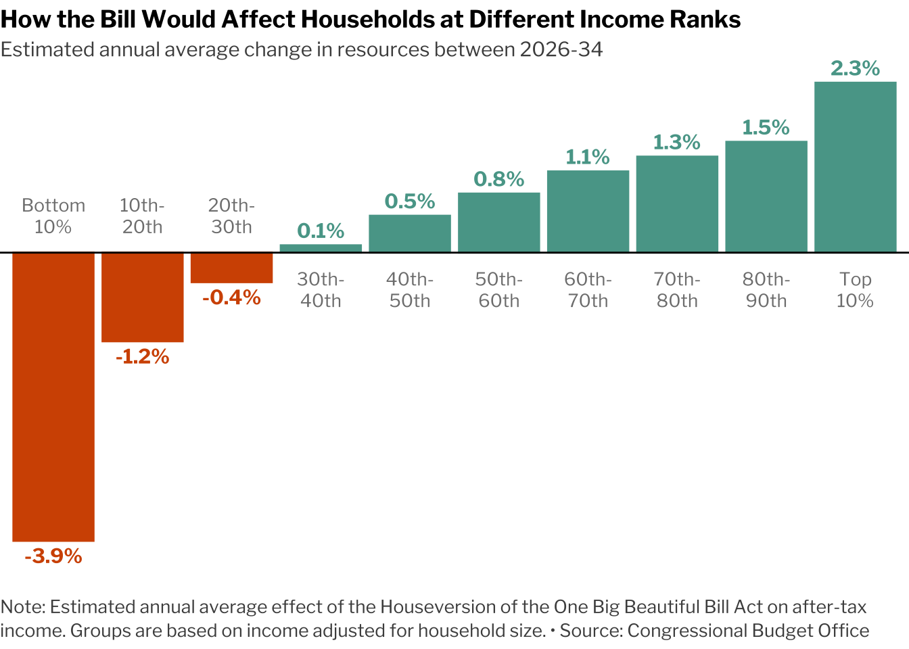

About
This is the written version of a YouTube Tutorial created by Spencer Schien. The tutorial recreates a chart found in this NY Times article using R.
Special thanks to Spencer for creating this amazing tutorial! 🙏🙏 Thanks also to Soeun Kim who helped integrate this tutorial to the gallery!
To follow similar content from Spencer, subscribe to his YouTube channel.
As a teaser, this is the plot we will be creating:

Libraries
We will use multiple packages from the tidyverse, plus
the scales and glue packages. I’ve also
included the showtext package, which can optionally be used
to load the fonts we will use.
You can read more about the showtext package on this dedicated post.
Remember that you can install those packages by running
install.packages("package_name") in your R
console.
Load Packages
Since we are just recreating a chart, we don’t need the underlying data. Every observation is labeled in the original, so we can create our own dataframe of the data we need for plotting.
# Create a vector of our grouping variable.
# This will be the x axis values
household_group <- c(
"Bottom\n10%",
"10th-\n20th",
"20th-\n30th",
"30th-\n40th",
"40th-\n50th",
"50th-\n60th",
"60th-\n70th",
"70th-\n80th",
"80th-\n90th",
"Top\n10%"
)
# Turn it into a factor so that it orders correctly.
# Otherwise ggplot will go in alpha order.
household_group = factor(
household_group,
levels = household_group
)
# Create a vector for the values, our y variable.
est_change <- c(
-.039,
-.012,
-.004,
.001,
.005,
.008,
.011,
.013,
.015,
.023
)
# Put it together in a dataframe.
d <- tibble(
household_group,
est_change
)Get the Chart Colors
Now we need to identify the exact colors from the original. For this chart, we can find the colors by inspecting the page and selecting the colored elements to see the assigned hex codes.
I’ve already done this, and the colors are below.
Get the Font
The NY Times uses its own custom fonts, but we can approximate them using freely available fonts. I have done the legwork to find a font–Libre Franklin, freely available on Google Fonts.
You can either download the font and added it to your system fonts,
or you can use the showtext package in R to do so.
Create the Plot
This chart is a simple bar
chart. What might trip some R users up is the very minimal theme and
the text labels because this chart employs methods that are far from the
ggplot defaults.
Instead of using normal axis labels, we can apply a text geom that serves as those labels. We will also strip away much of the other theme elements to leave the plot looking very crisp.
d |>
ggplot(aes(
household_group, # x axis
est_change, # y axis
# Values < zero use orange fill, values > 0 use green
fill = ifelse(est_change > 0, chart_cols[2], chart_cols[1]),
# Same for color, which we will need for text geoms
color = ifelse(est_change > 0, chart_cols[2], chart_cols[1])
)) +
# create the bars
geom_col() +
# this hline mimics an x axis
geom_hline(yintercept = 0) +
# create the y axis labels above the bars
geom_text(aes(
# format labels as percentages
label = label_percent(.1)(est_change),
# adjust labels either above or below the bar
vjust = ifelse(est_change < 0, 1.5, -.5)
),
# change font (changing font in `theme()` won't change it here)
family = "Libre Franklin",
fontface = "bold") +
geom_text(aes(
# this will serve as x axis labels
label = household_group,
# position them either just below or above x axis
y = ifelse(est_change > 0, -.005, .005)
),
# adjust font settings
color = "grey50",
lineheight = 1,
family = "Libre Franklin",
size = 3.5) +
# this tells ggplot to use the values of the colors we are
# assigning above, otherwise it will use defaults
scale_fill_identity() +
scale_color_identity() +
# this keeps ggplot from clipping text that overflows the plot
coord_cartesian(clip = "off") +
# remove all theme elements to start
theme_void() +
theme(
# Set font family, size, color
text = element_text(family = "Libre Franklin"),
title = element_text(face = "bold", size = 11),
plot.subtitle = element_text(face = "plain", color = "grey30"),
plot.caption = element_text(face = "plain", hjust = 0, size = 10,
lineheight = 1.1, color = "grey30",
margin = margin(t = 20, b = 5))
) +
# add title, subtitle, and caption
labs(title = "How the Bill Would Affect Households at Different Income Ranks",
subtitle = "Estimated annual average change in resources between 2026-34",
caption = glue::glue(
"Note: Estimated annual average effect of the House",
"version of the One Big Beautiful Bill Act on after-tax ",
"income. Groups are based on income adjusted for household size. • ",
"Source: Congressional Budget Office"
) |> str_wrap(110)
)
Going further
You might be interested in:
- this horizontal barplot showcasing the work by the data visualization team at The Economist.
- how to create a circular barplot with several features per group.
- how to add textures into the bars with ggpattern